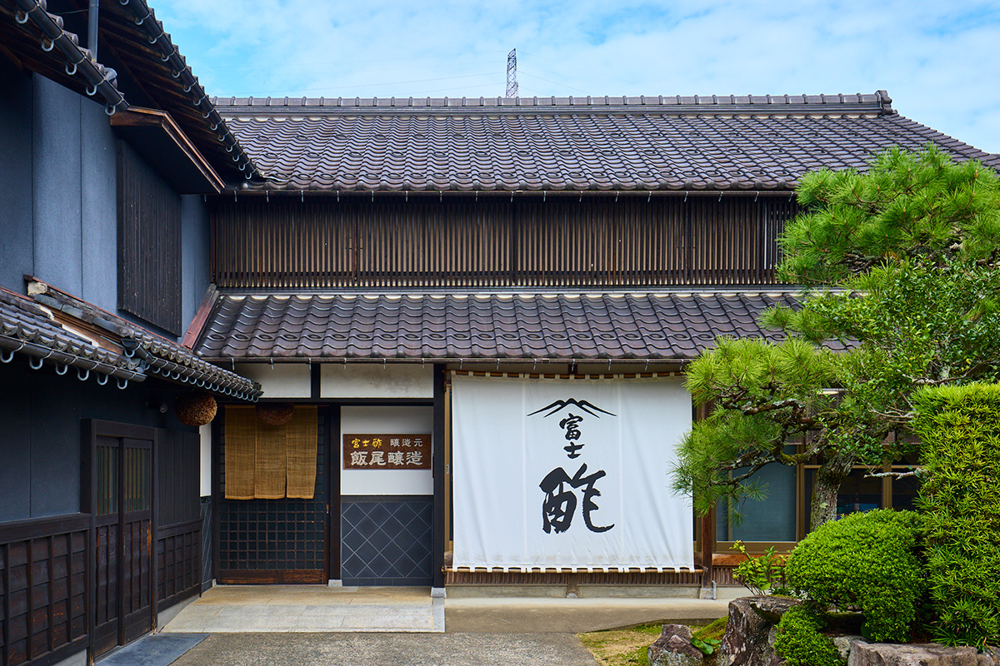
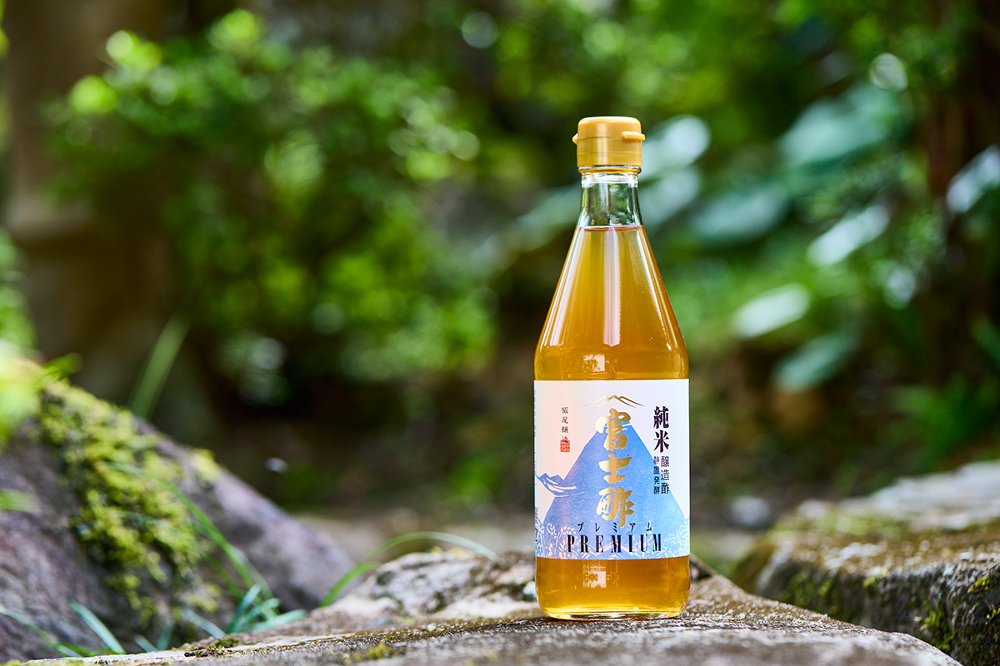
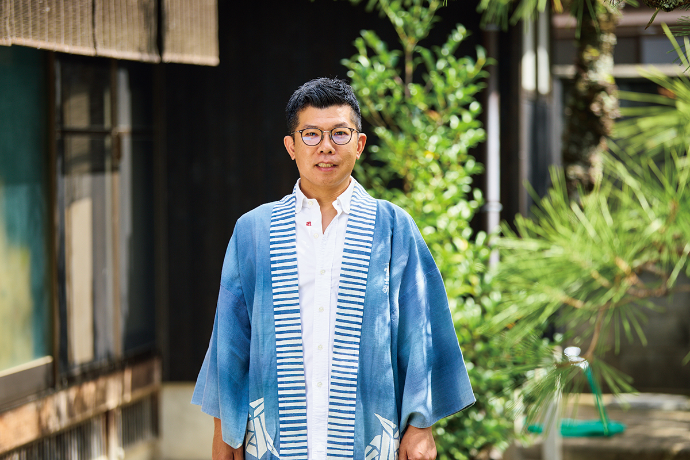
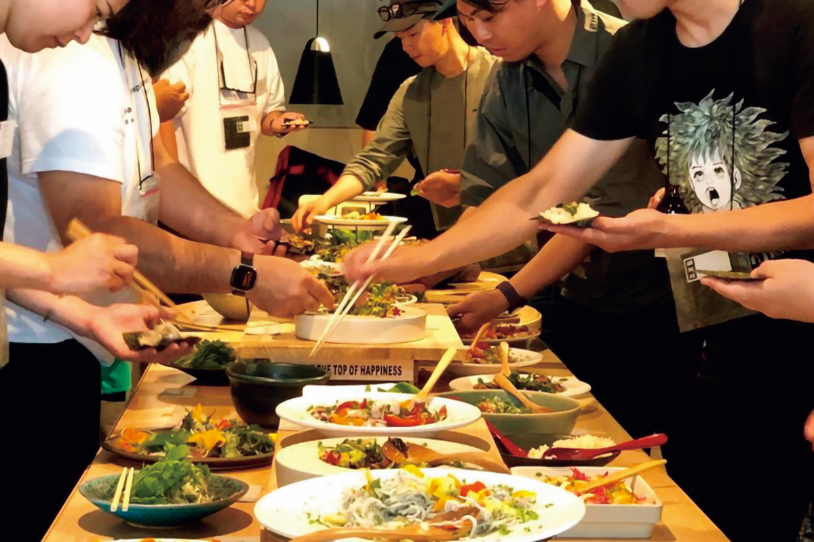
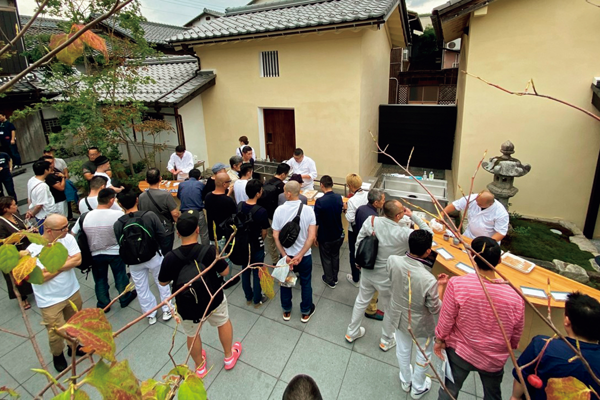
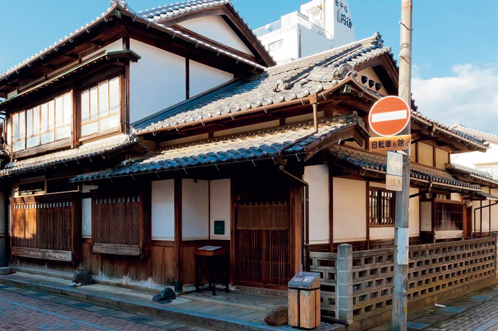

Префектура Киото · Миядзу · еда
Iio Jozo: рисовый уксус, который два года зреет на севере Киото

Семейная уксусная из Миядзу делает рисовый уксус так же долго, как сто лет назад, а её глава семейного дела хочет, чтобы ради еды на север Киото ехали со всего мира. Всё начинается с риса и времени.
Традиция
Уксус, который делают с риса
Север префектуры Киото с выходом к Японскому морю объединяет семь городов и посёлков под общим названием «Киото у моря». Здесь, в городе Миядзу, с 1893 года работает уксусная Iio Jozo. Пожалуй, ни одному уксусному дому в Японии так не подходят слова «традиция» и «новаторство» одновременно.

В 1960-х годах, когда слова «органический» в Японии ещё никто не знал, третий глава дома перешёл на рис, выращенный без ядохимикатов. Четвёртый стал покупать рис у фермеров по контракту втрое дороже, чем платил сельскохозяйственный кооператив, и взял в аренду заброшенные поля, чтобы растить рис самому. Так он поддерживал местных крестьян и сохранял привычный вид горных деревень, а заодно создал главный продукт семьи: «Дзюммай Фудзису», чистый рисовый уксус.

Старую технологию сегодня бережёт пятый глава дома, Акихиро Иио.
«Почти весь уксус в продаже делают с добавлением спирта. Мы сами шлифуем свежий рис нового урожая, выращенный без ядохимикатов, сами готовим кодзи и варим из него сакэ. Потом не гоним брожение за один-два дня, а сто дней даём сакэ спокойно превратиться в уксус, и ещё долго выдерживаем. Всего на одну партию уходит два года»
Акихиро Иио
Дело не только во времени. Чтобы назвать продукт рисовым уксусом, по японским нормам хватает определённого количества риса. В «Дзюммай Фудзису» его в пять раз больше, а в «Фудзису премиум», который придумал сам Акихиро, в восемь. Этот уксус называют «дайгиндзё среди уксусов», по имени самого тонкого сорта сакэ.
Стратегия
Король тэмаки и столица сяри
До семейного дела Акихиро занимался маркетингом в крупной японской компании по производству напитков. Оттуда он вынес главный урок: маленькой фирме не стоит соревноваться с гигантами на их поле. Нужно делать то, чего они не делают.

Так появился, например, уксус специально для маринования овощей, который теперь выпускают многие производители. Чтобы сделать край Танго «святым местом сяри», то есть рисовой основы суши, Акихиро основал «Институт сяри эдомаэ». Примерно раз в два года он проводит «Всемирный саммит сяри», куда съезжаются лучшие мастера суши из Японии и других стран.

В 2017 году, чтобы сделать из Танго гастрономическое направление, Iio Jozo открыла итальянский ресторан aceto.
«Образцом для нас стала Гетария, рыбацкая деревня рядом с Сан-Себастьяном, одним из главных гастрономических городов мира. В ней живут около двух тысяч человек, но со всего мира туда едут в ресторан, где на углях жарят лучшую в мире рыбу. Я уверен, что прорыв в одной узкой теме оживит весь край Танго»
Акихиро Иио

За последние десять лет в «Киото у моря» действительно стало больше ресторанов и гостиниц с мировым именем, и о побережье всё чаще пишут как о крае гурманов.
«У Киото у моря ещё много скрытых возможностей. Хочу и дальше рассказывать о нём через еду»
Акихиро Иио
Iio Jozo
- Адрес
- префектура Киото, Миядзу, Ода-Сюкуно, 373
- Телефон
- +81 772-25-0015
- Часы работы
- 9:00–12:00, 13:00–17:00
- Выходные
- суббота, воскресенье, праздники
- Цены / Вход
- экскурсия по уксусной возможна, по предварительной записи
- Сайт
- iio-jozo.co.jp
Фото: Косаку Китадзима.